Engineering looks different once you see where it happens
I visited research labs, factories, and technology companies to see how ideas move into real work. These are the details I noticed, the questions I asked, and what each place added to my understanding of engineering.
01
Blacksburg, Virginia
Virginia Tech
This trip put several sides of engineering in front of me at once. In the Ware Lab, I saw student teams building real competition projects. At the Helmet Lab, I watched researchers turn controlled impacts into data about protection. The hydroelasticity lab and towing tank then showed me how much careful testing goes into understanding the way water and flexible structures interact.
Photo recordVirginia Tech visit
01 / 05
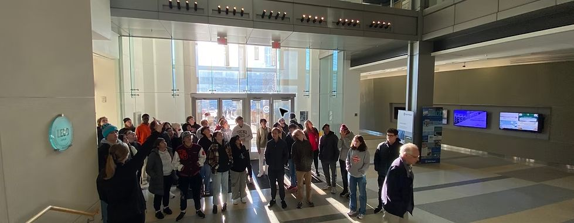
Arriving at Virginia Tech for the engineering lab tour
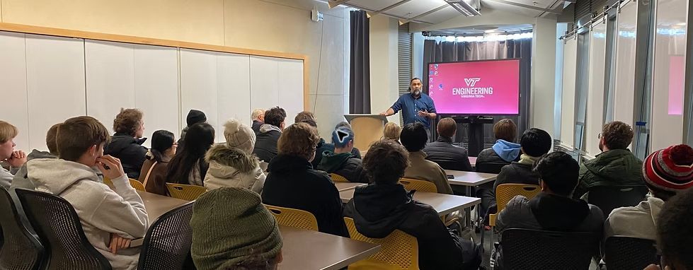
Learning about college pathways and the responsibilities of university life
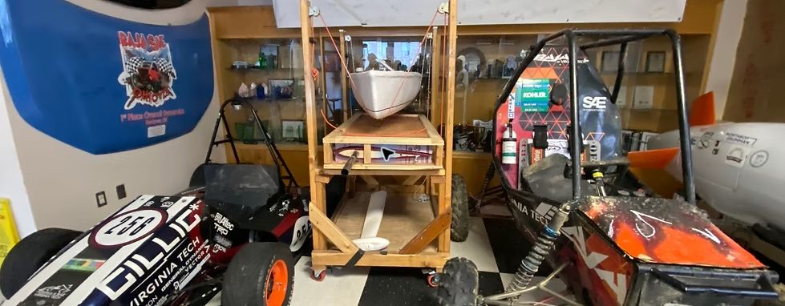
Student-built competition projects inside the Ware Lab
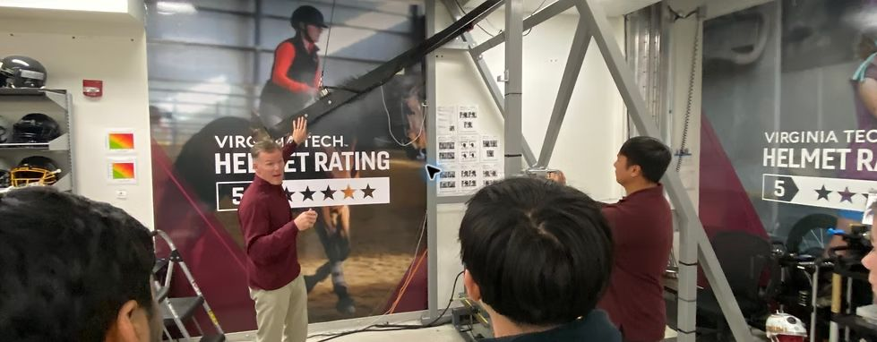
Seeing how the Helmet Lab measures protection and impact performance
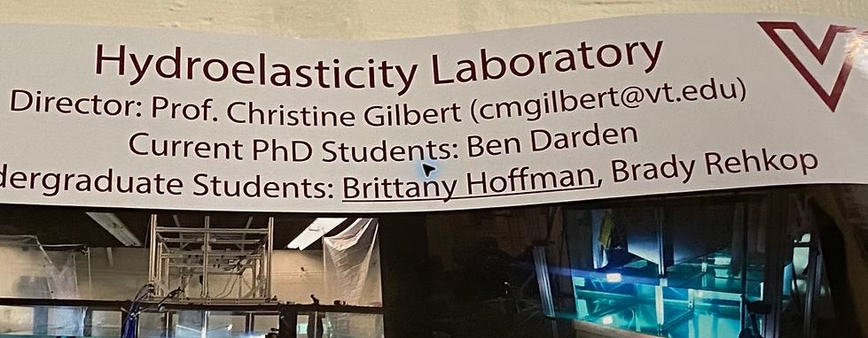
Learning how the Hydroelasticity Lab studies structures in water
02
Roanoke Valley Operations
Mack Trucks
I followed the cab line and looked closely at everything that had to happen before a worker could install one part. Tool placement, material routes, safety rules, timing, and instructions all shaped the job. Seeing lean manufacturing and autonomous guided vehicles in person helped me understand how a small change to a shelf, fixture, or delivery route can save time every time the task is repeated.
Photo recordMack Trucks visit
01 / 01
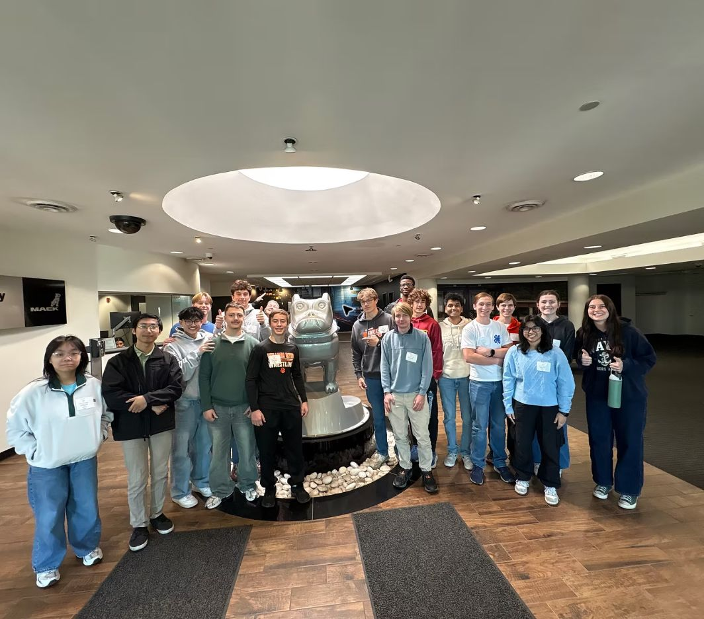
Our Burton engineering group at Mack Trucks
03
Roanoke, Virginia
Valcom
Valcom showed me what happens after an electronics idea leaves the workbench. Their communication systems have to be built, installed, tested, and trusted in schools, hospitals, and businesses for years. I came away thinking more about reliability and the people who will maintain a product after the design team is finished.
Photo recordValcom visit
01 / 05
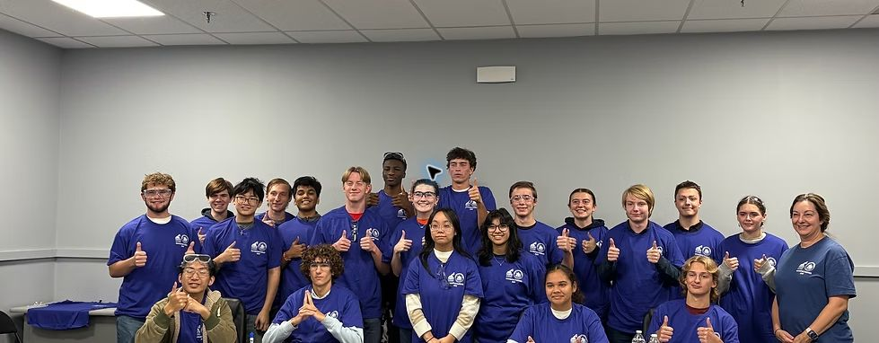
Our group at the start of the Valcom visit
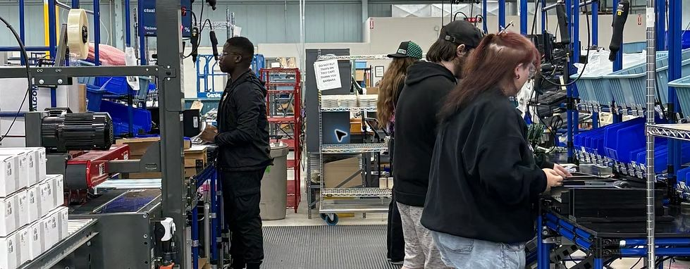
Following how parts move through the production floor
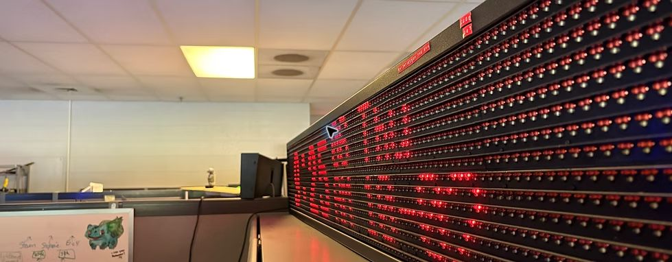
Seeing how components are stored and organized for production
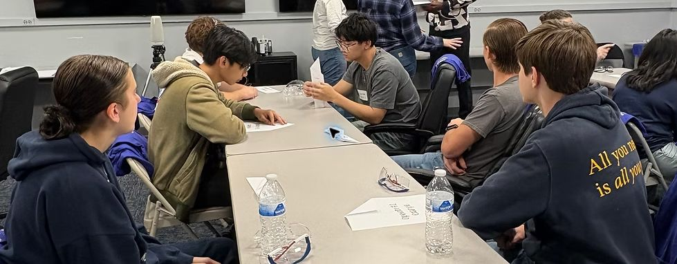
A hands-on activity during the facility tour
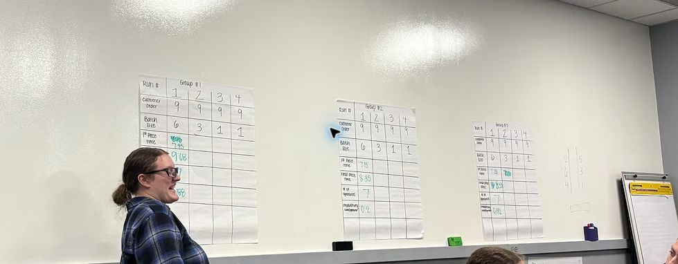
Discussing how engineering decisions connect to manufacturing
04
Manufacturing visit
Marvin Windows
At Marvin Windows, I paid attention to consistency. Every unit has to match exact architectural dimensions, even at production scale. The visit made it clear that material choice, machine setup, quality checks, and communication between stations all have to stay connected.
Photo recordMarvin Windows visit
01 / 04
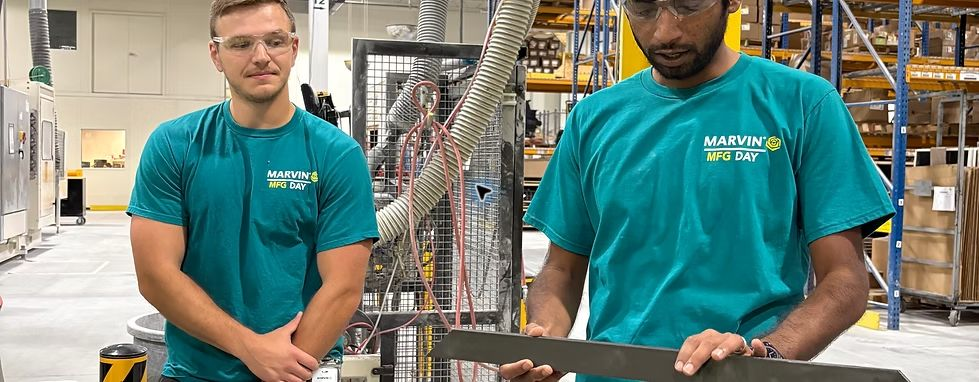
Our group beginning the Marvin Windows manufacturing tour
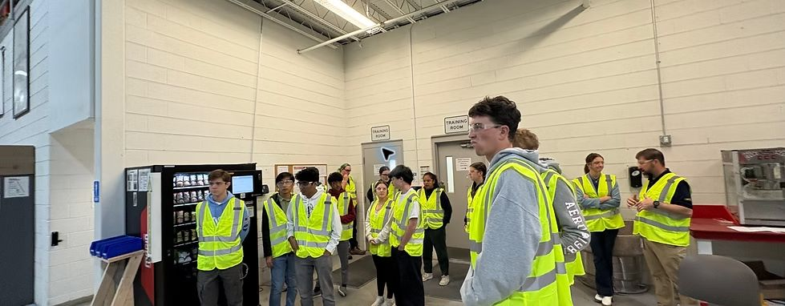
Learning how the production process is planned and monitored
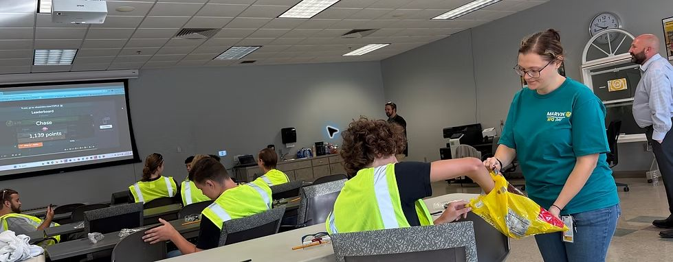
Asking questions about quality, safety, and automation
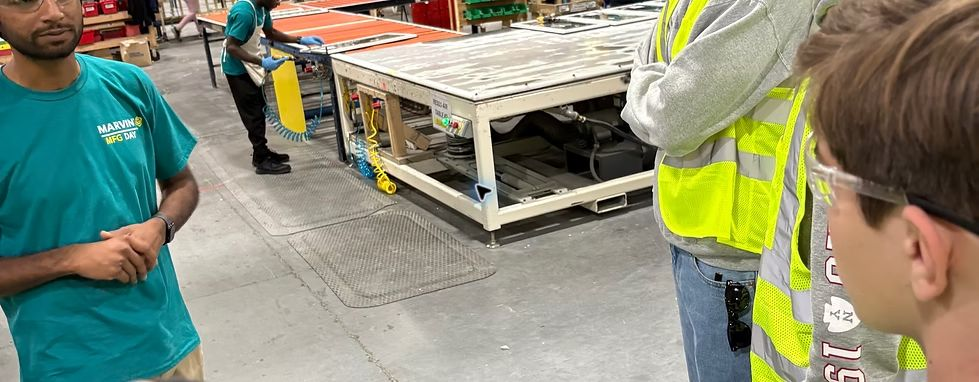
Watching the manufacturing process on the floor
05
Biotechnology visit
Novonesis
Novonesis gave me a look at industrial biotechnology. I had studied biology in class, but this was a chance to see how biological research is scaled into repeatable products and processes. It showed me another path where my interests in biology and engineering meet.
Photo recordNovonesis visit
01 / 01
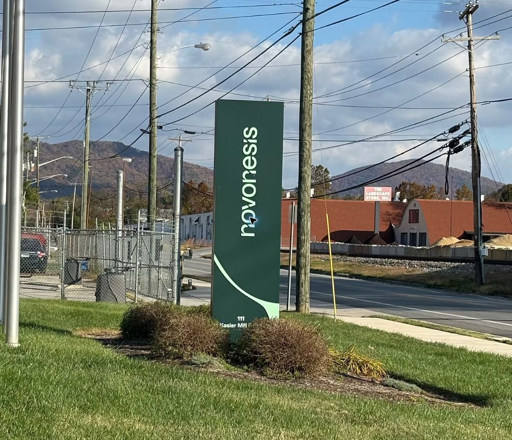
Visiting Novonesis to learn how biotechnology is scaled for manufacturing
The common thread
A design keeps changing as it moves from research to production and everyday use.